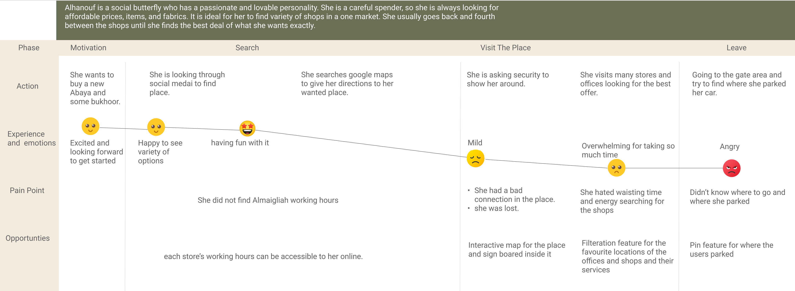
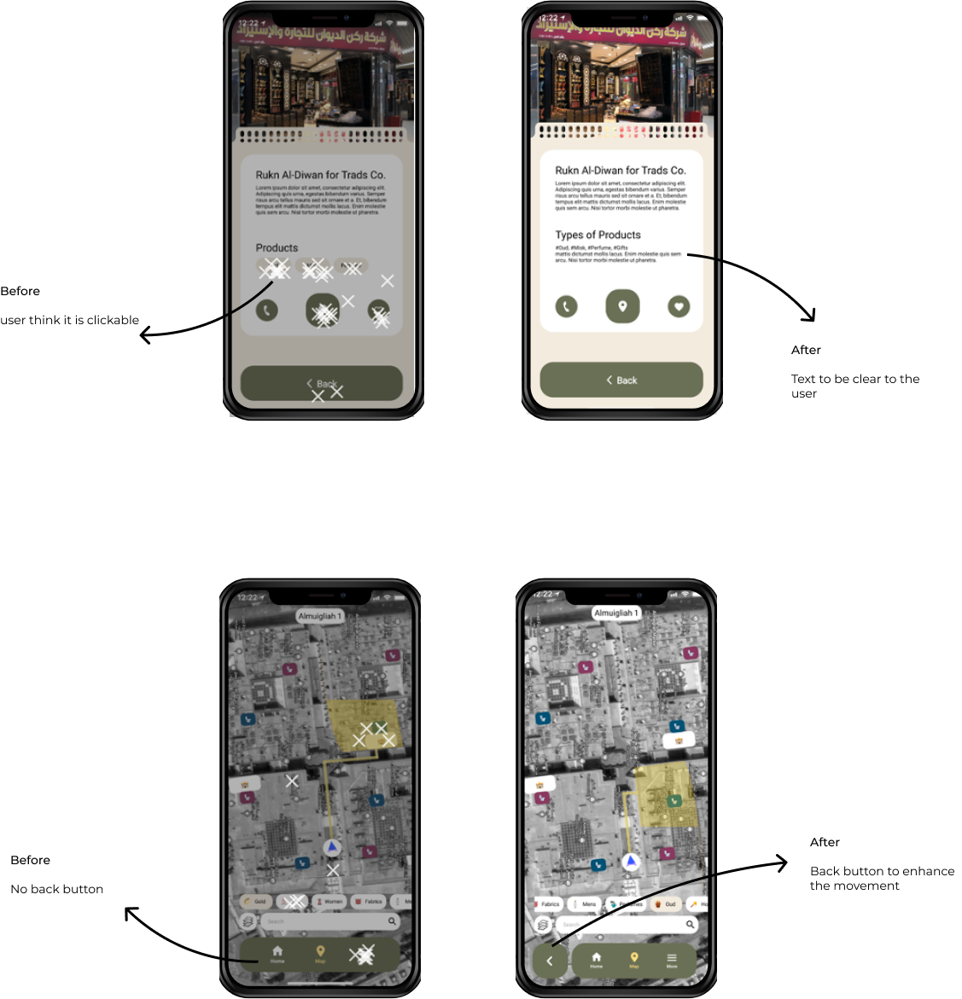

Online Experience for Al-Maigliah in Riyadh
This is a project for UX immersive course at Misk Academy. The main objective of this project is to create a platform for Al-Maigliah customers.

AL-Maigliah is a huge saudi traditional market. The first wholesales market ever in Riyadh and it consists of 4 buildings with different categories : Gold and Crystals, Kids, Women’s clothing, Fabric, Men’s apparel, Oud, Perfumes and Honey
Research
To learn more about the Al-Maigliah we conducted user and business research to develop a solution for customers who viisit Al-maigliah to enhance their shopping experience. Research goal The main objective of this project is to create a platform for Al-Maigliah customers.
User Research
We have conducted desk research from Google Reviews, Foursquare, Twitter and Youtube. this method help to dscover what people feel and their experience , what they faced in the place.
What people’s said
here we used affinity mapping that help us to sort and cluster the answers into organizeed group. that helped us find patterns of thinking. Also, show us where the majority of people's minds are focused.


People’s behaviour
We visited AL-Maigliah to observe people's behavior and their experience. Also, talk with a few people and stores to gain more information about the users and what they do. The study was beneficial, and we learned many things, that helped us to knowing the behavior of the target users and the issues they faced in AL-Maigliah.

User Persona
When we were conducting desk research we came up with Abu Salem as our persona, but after the field study we realized we should change the persona to match what we saw in reality.

From the research and the data, we created a Alhanouf persona that representative of the target users. Our persona now is a female between 25-35 years old. She is a people person, and one who can easily fit anywhere. She is sharp, fun, and caring.

Alhanouf Experince
We used a journey map which is a visual representation of the steps that a person takes to achieve a goal. Here is alhanouf experince when vistied Al-maigliah.
Business Research
After understanding Al-maigliah structure, we wanted to go into simler places to find competitors to know how they help their customers during shopping. Based on our research, we found five competitors: Element Mall, Dubai Mall, Miami Beach Lincoln Road mall, Mall of Emirates, Dubai shopping visitor guide. That provide solution to guide their customers inside the place. We conducted business research in order to understand the industries and come up with key features for the platform.
Start by Competitive analysis is a technique for gathering and comparing information about companies. We used this strategy to better understand our competitors so that we could develop a solution that was on par with theirs.

Then we did Heuristic evaluation which is a method to measure the usability of user interfaces and report issues.


Layout Comparison
Process of comparing competitors interface.

Problem
Our AL-Maigliah visitors has the problem that they (get lost ) when shopping due to complexity of the huge place and lack of organization and signboards. Our solution is to deliver a smooth and seamless journey experience with a variety of features to make it easier and joyful.
Storyboard

Solution
Provide an application that has an interactive map to guide the visitors, and a categorization by store type.

AL Delilah App (الدليلة.. يدللك ويدلك)
User Flow
The user flow takes the user from the start point step by step to the final action to achieve the goal. We define the path the user will take.

Site Map
A sitemap was produced to help visualize the layout and content.

Feature Prioritization MoSCoW
MoSCoW is a prioritization technique for managing requirements.

Key Featuers
- Interactive Map.
- Information about AL-Maigliah and listing facilities.
- Filtration feature for what category they want to see in the map.
Low - Mid Wireframe
As team we combine our ideas together to shape our product and came with this design ( low fedilty ) by add elements together using figma.

Testing

We conducted usability tests on participants to assess the effectiveness of the website process. Areas for improvement were participants faced some issues on a different screen, some items appeared out of range, large components in the checkout page made it difficult for users to easily navigate, some participants tried to use a sort tool but couldn’t find it.
Iterating based on feedback
Prototype

Reflection
As someone who is not from Riyadh, I learned many new things during the research both user and business, and gain good information. it was interesting to know customers' behavior. Overall, this project was really fun with an amazing team. I enjoy the work and building an app from scratch that helps me a lot to understand the UX research and design process very well.